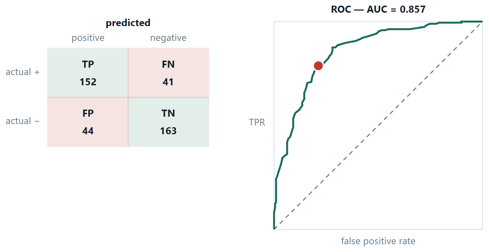
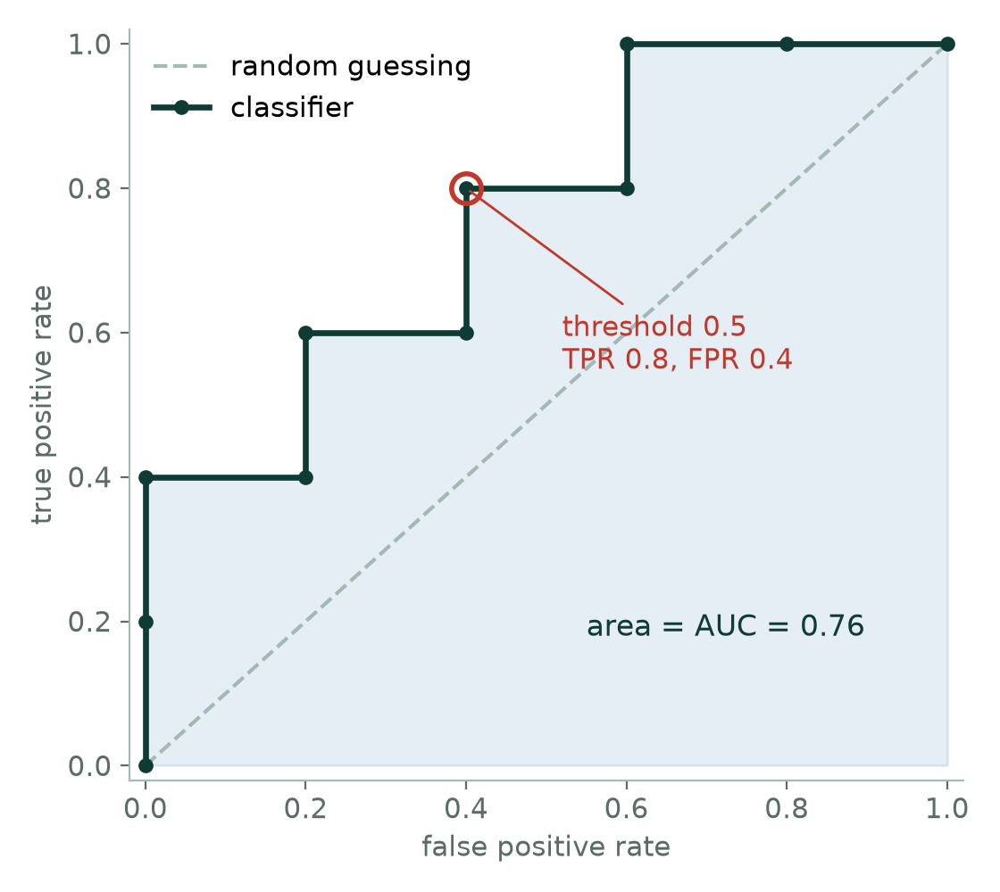

Chapter 12: Evaluating Classifiers¶
A classifier is only as good as the number used to judge it, and the wrong number can make a useless model look excellent. This chapter builds the confusion matrix and every ratio that can be computed from it, explains why accuracy alone is dangerous on imbalanced data, introduces the ROC curve and AUC, extends the metrics to more than two classes, and closes with a guide to choosing among the eight classifiers of this unit.
12.1 How to judge a classifier¶
A test for a disease that 1 in 1 000 people have can be 99.9% accurate by answering “healthy” every single time. It detects nothing. Accuracy is a single number covering two very different kinds of mistake, and when the classes are unequal it is dominated by the one you do not care about.
So separate the mistakes. There are exactly four things that can happen, and every metric in this section is a ratio of two of them.
Definition: The confusion matrix, and the ratios from it
TP predicted positive and was. FP predicted positive and was not — a false alarm, a type I error. FN predicted negative and was positive — a miss, a type II error. TN predicted negative and was.
Accuracy \(=\) (TP+TN)/all \(\cdot\) Precision \(= \text{TP}/(\text{TP}+\text{FP}) \cdot\) Recall \(= \text{TP}/(\text{TP}+\text{FN}) \cdot\) Specificity \(= \text{TN}/(\text{TN}+\text{FP}) \cdot F1 =\) 2PR/(P+R)
The trick for remembering precision and recall is to look at the denominator. Precision divides by what the model said — of everything I flagged, how much was real? Recall divides by what was true — of everything real, how much did I find? F1 is their harmonic mean, which sits close to the smaller of the two, so a model cannot buy a good F1 by sacrificing one of them.

| Situation | Which mistake hurts | Optimise |
|---|---|---|
| Cancer screening | a missed tumour (FN) | recall |
| Spam filter | a job offer in the spam folder (FP) | precision |
| Fraud detection | both, asymmetrically | recall at a fixed alert budget |
| Balanced classes, equal costs | neither especially | accuracy is fine |
| Ranking, threshold not yet fixed | — | AUC, or average precision |
ROC and AUC
Plot the true positive rate against the false positive rate at every possible threshold. A perfect model reaches the top-left corner; the diagonal is random guessing. AUC, the area beneath, has a clean reading: the probability that a randomly chosen positive scores higher than a randomly chosen negative. It is threshold-free, which makes it good for comparing models — and misleading on heavily imbalanced data, because a large number of true negatives keeps the false positive rate small no matter how many false alarms there are. For rare positives, prefer the precision–recall curve.
# the numbers to report, and the threshold as a separate decision
from sklearn.metrics import (confusion_matrix, classification_report,
roc_auc_score, roc_curve, precision_recall_curve)
print(confusion_matrix(y_te, pred)) # [[TN, FP], [FN, TP]] — note the order
print(classification_report(y_te, pred, digits=3))
print("AUC", roc_auc_score(y_te, proba)) # the score, never the hard prediction
# choose the threshold from the cost of a mistake, not from the default 0.5
prec, rec, thr = precision_recall_curve(y_te, proba)
for p, r, t in zip(prec, rec, thr):
if r >= 0.90: # "catch 90% of the positives"
print("threshold", round(t, 3), "gives precision", round(p, 3))
break
Two traps in that snippet
sklearn's confusion matrix is laid out [[TN, FP], [FN, TP]] — negatives first, the opposite of the way the matrix is usually drawn in a textbook, and a reliable source of inverted answers. And roc_auc_score must be given proba, not pred: hand it hard 0/1 labels and it silently computes the area under a two-point curve, which is a different and much smaller number.
12.2 Metrics for more than two classes¶
The confusion matrix becomes \(c \times c\): rows are the true class, columns what the model said, and the diagonal is what it got right. Its value is in the off-diagonal pattern — mass concentrated in one cell says two particular classes overlap and points at the feature that might separate them, while the same number of errors spread evenly says something quite different.
Precision, recall and F1 are defined per class — for class \(k\), everything else is “negative”. To get one number you must choose how to average, and the three choices can differ enormously.
| Average | How | Whose vote counts |
|---|---|---|
| Macro | mean of the per-class scores | every class equally — a rare class can drag it down on its own |
| Micro | pool TP, FP, FN over all classes, then divide | every example equally — the large classes dominate |
| Weighted | per-class scores averaged by support | between the two; the default in classification_report |
Two things worth knowing before you quote a number
For single-label multi-class problems, micro-precision, micro-recall, micro-F1 and plain accuracy are all the same number — quoting them together looks like four pieces of evidence and is one. And a wide gap between macro and micro is itself the finding: it says the model is carried by the large classes and is failing a small one. If the small one is the reason the project exists, macro is the honest number to report.
# multi-class, three ways, on a three-class problem
from sklearn.linear_model import LogisticRegression
from sklearn.multiclass import OneVsRestClassifier, OneVsOneClassifier
from sklearn.svm import SVC
from sklearn.metrics import confusion_matrix, classification_report
# 1. softmax directly — one model, c score vectors
soft = LogisticRegression(max_iter=1000).fit(X_tr, y_tr) # multinomial by default
print(soft.coef_.shape) # (n_classes, n_features) — one row per class
print(soft.predict_proba(X_te[:3]).round(3)) # each row sums to 1
# 2. and 3. the wrappers, around any binary classifier
ovr = OneVsRestClassifier(SVC(kernel="linear")).fit(X_tr, y_tr)
ovo = OneVsOneClassifier(SVC(kernel="linear")).fit(X_tr, y_tr)
print(len(ovr.estimators_), len(ovo.estimators_)) # c, then c(c-1)/2
print(confusion_matrix(y_te, soft.predict(X_te))) # rows = true, cols = predicted
print(classification_report(y_te, soft.predict(X_te), digits=3))
# the last three rows are accuracy, macro avg and weighted avg — read all of them
12.3 Choosing between the eight¶
| Algorithm | Training | Prediction | Scaling? | Reach for it when |
|---|---|---|---|---|
| Decision tree | fast | very fast | no | rules must be explainable; mixed feature types; no scaling wanted |
| Naïve Bayes | one pass | very fast | no | text, high dimensions, very little data, a fast baseline |
| Logistic regression | fast | very fast | yes | you need calibrated probabilities and readable coefficients — the default first model |
| k-NN | none | slow, \(O(\text{mn})\) | yes | small data, irregular boundaries, no training budget |
| Perceptron | fast | very fast | yes | historical and pedagogical; superseded in practice |
| MLP | slow | fast | yes | large data, complex boundaries, interpretability not required |
| SVM | slow for large \(m\) | fast (support vectors only) | yes | clear margins, many features relative to examples, text |
The practical advice behind that table: start with logistic regression or a shallow tree as a baseline, measure properly, and only then reach for something heavier. A complicated model that beats a simple one by 0.4% is usually not worth what it costs in explanation and maintenance.
12.4 Further topics¶
More about ROC curves and AUC¶
A ROC curve is built from the scores alone, so three of its properties are worth knowing.
It depends only on the ranking. Any increasing transformation of the scores (squaring them, taking logarithms, rescaling) leaves the order of the examples unchanged, so it leaves the ROC curve and the AUC unchanged. This is both a strength and a limit: AUC compares models fairly even if their scores are on different scales, but it says nothing about whether the scores are calibrated as probabilities. A model can have a perfect AUC and still say 0.9 for cases that are positive only half of the time.
Ties and direction. If a positive and a negative share exactly the same score, the curve moves diagonally for that step, and the pair counts as half a win in the pairs definition of AUC. An AUC below 0.5 means the ranking is systematically upside down; reversing the model's output gives \(1 - \text{AUC}\).
It ignores prevalence, which is both good and bad. TPR and FPR are each computed within one class, so the ROC curve does not change if the number of negatives is multiplied by ten. That makes it a clean description of the model, but it also means it cannot warn you that, with rare positives, the false alarms will swamp the true alerts, as the screening example showed.
The precision–recall curve and average precision¶
For rare positives the better picture plots precision against recall as the threshold sweeps. Each threshold gives one point (recall, precision); the curve usually zig-zags downwards from left to right, since admitting more examples tends to let in more false alarms. A model that ranks perfectly stays at precision 1 until recall reaches 1. A model that guesses at random has a flat curve at a height equal to the prevalence of the positive class, so, unlike the ROC curve, its baseline depends on how rare the positives are, and the curve cannot flatter a model on imbalanced data.
The area under this curve is summarised by the average precision, the sum of the precisions at each rise in recall weighted by the rise:
For the ten scored examples of the ROC worked example, the recall rises by 0.2 at each of the five positives, where the precision is \(1,\ 1,\ 0.75,\ 0.667,\ 0.625\), so \(\text{AP} = 0.2(1 + 1 + 0.75 + 0.667 + 0.625) = 0.808\), a little higher than the AUC of 0.76 for the same data.
Choosing the threshold from the costs of the two mistakes¶
The default threshold of 0.5 treats a false alarm and a miss as equally costly, which is rarely true. Suppose a miss (a false negative) costs \(c_{\text{FN}}\) and a false alarm (a false positive) costs \(c_{\text{FP}}\), and that the model's probability \(p\) for an example is well calibrated. Flagging the example costs \((1 - p)\,c_{\text{FP}}\) in expectation, because with probability \(1 - p\) it is a false alarm. Not flagging it costs \(p\,c_{\text{FN}}\). Flagging is better when
In the fraud example, a missed fraud cost ₹50 000 and an alert cost ₹200 to review, which gives a threshold of \(200/50\,200 \approx 0.004\): flag any transaction the model thinks is even 0.4% likely to be fraud. The threshold is a decision about money, not a property of the model. Two cautions apply. The formula needs calibrated probabilities (check with a calibration plot, or fit the threshold empirically instead), and the threshold, like any hyper-parameter, must be chosen on validation data and not on the test set.
12.5 Worked examples¶
The examples below work through the calculations of this chapter in full. Try each one on paper before reading the steps.
Example 12.1: Every metric, and the argument about which one
Problem. A fraud detector is tested on 10 000 transactions of which 100 are fraudulent. It flags 150, of which 80 are truly fraudulent. Build the confusion matrix, compute every metric, and say what you would report to the bank.
Step 1 — fill the four cells
\(\text{TP} = 80\) (flagged and fraudulent)
\(\text{FP} = 150 - 80 = 70\) (flagged, not fraudulent)
\(\text{FN} = 100 - 80 = 20\) (fraudulent, not flagged)
\(\text{TN} = 10 000 - 80 - 70 - 20 = 9 830\)
Step 2 — the ratios
Accuracy \(= (80 + 9 830)/10 000 = 99.10\%\)
Precision \(= 80/150 = 0.533\) — of the alerts raised, just over half were real
Recall \(= 80/100 = 0.800\) — four fifths of the fraud was caught
Specificity \(= 9 830/9 900 = 0.993\)
\(F1 = 2(0.533)(0.800)/(0.533 + 0.800) = 0.853/1.333 = 0.640\)
Step 3 — the baseline nobody quotes
“Never flag anything” scores 9 \(900/10 000 = 99.00\%\) accuracy. The detector's 99.10% is one tenth of a percentage point better than doing nothing — so the accuracy figure, while true, carries almost no information about whether the system works.
Step 4 — what to report, and what to ask
Report recall 0.80 and precision 0.53, together with the number of alerts per day, because that is what determines the staffing. Then ask the bank the question that actually decides the threshold: what does a missed fraud cost, and what does an hour of an analyst's time cost? If a missed fraud costs ₹50 000 and reviewing an alert costs ₹200, lowering the threshold to catch 95% of fraud is worth it even if the alerts triple.
Answer. Accuracy 99.1%, precision 0.533, recall 0.800, F1 0.640 — against a do-nothing baseline of 99.0%.
Example 12.2: From a fitted model to a confusion matrix and every metric
Problem. A logistic model predicts whether a student clears a certification exam: \(z = -3 + 1.0x_1 + 0.5x_2\), where \(x_1\) is hours of study per day and \(x_2\) the number of practice tests. It is tested on five students.
| Student | \(x_1\) | \(x_2\) | Actual result |
|---|---|---|---|
| A | 1 | 0 | 0 (failed) |
| B | 2 | 0 | 0 (failed) |
| C | 2 | 2 | 0 (failed) |
| D | 3 | 2 | 1 (cleared) |
| E | 4 | 2 | 1 (cleared) |
(a) Find each probability and predicted class at threshold 0.5. (b) Build the confusion matrix. (c) Compute accuracy, precision, recall, specificity and F1.
Step 1 — score every student (part a)
| Student | \(z\) | \(p = 1/(1 + e^{-z})\) | Predicted | Actual |
|---|---|---|---|---|
| A | \(-3 + 1 + 0 = -2\) | 0.1192 | 0 | 0 |
| B | \(-3 + 2 + 0 = -1\) | 0.2689 | 0 | 0 |
| C | \(-3 + 2 + 1 = 0\) | 0.5000 | 1 | 0 |
| D | \(-3 + 3 + 1 = +1\) | 0.7311 | 1 | 1 |
| E | \(-3 + 4 + 1 = +2\) | 0.8808 | 1 | 1 |
Student C sits exactly on the boundary (\(p = 0.5\)). The rule "predict 1 if \(p \ge 0.5\)" assigns C to class 1, and that is the one mistake.
Step 2 — the confusion matrix (part b)
| Predicted 0 | Predicted 1 | |
|---|---|---|
| Actual 0 | A, B: TN \(= 2\) | C: FP \(= 1\) |
| Actual 1 | none: FN \(= 0\) | D, E: TP \(= 2\) |
Step 3 — the metrics (part c)
Accuracy \(= (2 + 2)/5 = 0.80\)
Precision \(= \text{TP}/(\text{TP} + \text{FP}) = 2/3 = 0.667\)
Recall \(= \text{TP}/(\text{TP} + \text{FN}) = 2/2 = 1.000\)
Specificity \(= \text{TN}/(\text{TN} + \text{FP}) = 2/3 = 0.667\)
\(F1 = 2(0.667)(1.000)/(0.667 + 1.000) = 1.333/1.667 = 0.80\)
Answer. TP \(= 2\), TN \(= 2\), FP \(= 1\), FN \(= 0\); accuracy \(0.80\), precision \(0.667\), recall \(1.000\), specificity \(0.667\), F1 \(0.80\).
Comment. Recall is perfect (no student who would clear was missed) but precision is only two thirds, because of one false alarm: the metrics describe different faces of the same four numbers. Raising the threshold to 0.6 would move C to class 0 and make all five predictions correct. Resist the temptation: choosing the threshold by looking at five test cases is tuning on the test set. The threshold should be chosen on validation data, from the relative cost of a false alarm and a miss.
Example 12.3: A ROC curve and its AUC, built by hand
Problem. A classifier scores ten test examples, five positive and five negative. Sorted by score, from highest to lowest, they are:
| Rank | 1 | 2 | 3 | 4 | 5 | 6 | 7 | 8 | 9 | 10 |
|---|---|---|---|---|---|---|---|---|---|---|
| Score | 0.95 | 0.85 | 0.80 | 0.70 | 0.60 | 0.55 | 0.45 | 0.40 | 0.30 | 0.20 |
| True class | P | P | N | P | N | P | N | P | N | N |
Construct the ROC curve, compute the AUC, and read off the confusion matrix at threshold 0.5.
Step 1 — sweep the threshold
Lower the threshold past each score in turn. Each example above the threshold is predicted positive, so a true positive raises the true positive rate by \(1/5 = 0.2\) and a false positive raises the false positive rate by \(1/5 = 0.2\).
| Threshold (predict P if score \(\ge\)) | TP | FP | TPR | FPR | Precision |
|---|---|---|---|---|---|
| 0.95 | 1 | 0 | 0.2 | 0.0 | 1.000 |
| 0.85 | 2 | 0 | 0.4 | 0.0 | 1.000 |
| 0.80 | 2 | 1 | 0.4 | 0.2 | 0.667 |
| 0.70 | 3 | 1 | 0.6 | 0.2 | 0.750 |
| 0.60 | 3 | 2 | 0.6 | 0.4 | 0.600 |
| 0.55 | 4 | 2 | 0.8 | 0.4 | 0.667 |
| 0.45 | 4 | 3 | 0.8 | 0.6 | 0.571 |
| 0.40 | 5 | 3 | 1.0 | 0.6 | 0.625 |
| 0.30 | 5 | 4 | 1.0 | 0.8 | 0.556 |
| 0.20 | 5 | 5 | 1.0 | 1.0 | 0.500 |
Plotting TPR against FPR, with the start \((0, 0)\), gives a staircase: up for every positive, right for every negative.

Step 2 — the area under the curve
Vertical steps add no area; each horizontal step of width \(0.2\) adds \(0.2 \times\) (the current TPR):
\(\text{AUC} = 0.2(0.4) + 0.2(0.6) + 0.2(0.8) + 0.2(1.0) + 0.2(1.0) = 0.08 + 0.12 + 0.16 + 0.20 + 0.20 = 0.76\)
Step 3 — the same number, by counting pairs
AUC is the probability that a randomly chosen positive outscores a randomly chosen negative. There are \(5 \times 5 = 25\) positive–negative pairs. The positive scoring 0.95 beats all five negatives; 0.85 beats all five (it exceeds 0.80); 0.70 beats four (all but the 0.80); 0.55 beats three (0.45, 0.30, 0.20); 0.40 beats two (0.30, 0.20). That is \(5 + 5 + 4 + 3 + 2 = 19\) pairs won, so \(\text{AUC} = 19/25 = 0.76\).
Step 4 — one operating point, threshold 0.5
Scores \(\ge 0.5\): 0.95 (P), 0.85 (P), 0.80 (N), 0.70 (P), 0.60 (N), 0.55 (P). So TP \(= 4\), FP \(= 2\), FN \(= 1\) (the positive scoring 0.40), TN \(= 3\). Then TPR \(= 4/5 = 0.8\), FPR \(= 2/5 = 0.4\), precision \(= 4/6 = 0.667\). This is the ringed point on the curve.
Answer. AUC \(= 0.76\) (by area and by pairs). At threshold 0.5: TP \(= 4\), FP \(= 2\), FN \(= 1\), TN \(= 3\), so TPR \(= 0.8\), FPR \(= 0.4\), precision \(= 0.667\).
Comment. The curve describes the model; the ringed point describes one choice of threshold. To catch every positive one must go down to threshold 0.40 and accept an FPR of 0.6. The last column of the table is the precision–recall view of the same sweep: precision falls and recall (TPR) rises as the threshold falls. An AUC of 0.76 means the ranking is clearly better than guessing (0.5) and far from perfect (1.0).
Example 12.4: Macro, micro and weighted averages on three classes
Problem. A classifier is tested on 100 examples of three classes A, B and C, with 50, 30 and 20 examples respectively. Rows are the true class, columns the predicted class.
| Predicted A | Predicted B | Predicted C | Row total | |
|---|---|---|---|---|
| True A | 45 | 3 | 2 | 50 |
| True B | 6 | 21 | 3 | 30 |
| True C | 6 | 4 | 10 | 20 |
| Column total | 57 | 28 | 15 | 100 |
Compute the per-class precision, recall and F1, and the macro, micro and weighted averages.
Step 1 — per class: one-vs-rest
For each class, the diagonal cell is TP, the rest of its row is FN, and the rest of its column is FP. Precision divides the diagonal by the column total, recall by the row total.
| Class | Precision | Recall | F1 |
|---|---|---|---|
| A | \(45/57 = 0.789\) | \(45/50 = 0.900\) | \(0.841\) |
| B | \(21/28 = 0.750\) | \(21/30 = 0.700\) | \(0.724\) |
| C | \(10/15 = 0.667\) | \(10/20 = 0.500\) | \(0.571\) |
Step 2 — macro average (every class counts equally)
Precision \(= (0.789 + 0.750 + 0.667)/3 = 0.735\); recall \(= (0.900 + 0.700 + 0.500)/3 = 0.700\); F1 \(= (0.841 + 0.724 + 0.571)/3 = 0.712\).
Step 3 — weighted average (weight by the class sizes 0.5, 0.3, 0.2)
Precision \(= 0.5(0.789) + 0.3(0.750) + 0.2(0.667) = 0.753\); recall \(= 0.5(0.900) + 0.3(0.700) + 0.2(0.500) = 0.760\); F1 \(= 0.752\).
Step 4 — micro average (pool the counts)
Total TP \(= 45 + 21 + 10 = 76\); total FP \(= 100 - 76 = 24\) (every error is a false positive for the class it was assigned to); total FN \(= 24\). Micro-precision \(= 76/(76 + 24) = 0.76\), micro-recall \(= 76/100 = 0.76\), micro-F1 \(= 0.76\).
Answer. Macro: precision \(0.735\), recall \(0.700\), F1 \(0.712\). Weighted: \(0.753\), \(0.760\), \(0.752\). Micro: \(0.76\) for all three, which is also the accuracy \(76/100\).
Comment. The micro figures equal the accuracy because in single-label problems every error is one class's false positive and another's false negative. The weighted recall equals it for the same reason. The gap between the macro recall \(0.70\) and the accuracy \(0.76\) is the finding: the model is carried by the large class A (recall \(0.90\)) and fails the small class C (recall \(0.50\)). If class C is the reason for the project, the macro figure, and the per-class table, are the honest numbers to report.
Example 12.5: Why a good test can still give mostly false alarms
Problem. A screening test detects a disease with 99% sensitivity (recall) and 95% specificity. The disease affects 1% of the population. Of 10 000 people tested, build the confusion matrix and compute precision, accuracy and F1. Compare accuracy with the "never flag anyone" baseline.
Step 1 — fill the four cells
The disease is present in \(1\% \times 10\,000 = 100\) people and absent in \(9\,900\).
\(\text{TP} = 0.99 \times 100 = 99\) and \(\text{FN} = 100 - 99 = 1\)
\(\text{TN} = 0.95 \times 9\,900 = 9\,405\) and \(\text{FP} = 9\,900 - 9\,405 = 495\)
Step 2 — the metrics
Precision \(= 99/(99 + 495) = 99/594 = 0.167\)
Recall \(= 99/100 = 0.99\)
Accuracy \(= (99 + 9\,405)/10\,000 = 95.04\%\)
\(F1 = 2(0.167)(0.99)/(0.167 + 0.99) = 0.285\)
Step 3 — the baseline
A test that flags nobody scores \(9\,900/10\,000 = 99\%\) accuracy. The real test, with its excellent sensitivity and specificity, has the lower accuracy.
Step 4 — the same answer from Bayes' theorem
\(P(\text{disease} \mid \text{positive}) = \dfrac{0.99 \times 0.01}{0.99 \times 0.01 + 0.05 \times 0.99} = \dfrac{0.0099}{0.0594} = 0.167\)
Answer. Precision \(0.167\), recall \(0.99\), accuracy \(95.04\%\) (below the \(99\%\) do-nothing baseline), F1 \(0.285\). Five out of six positive results are false alarms.
Comment. Sensitivity and specificity belong to the test and do not depend on how common the disease is; precision does. When positives are rare, even a small false-positive rate applied to the huge negative class swamps the true positives. This is why a positive screening result is followed by a more specific confirmatory test, and why a ROC curve, which is blind to prevalence, can look excellent for a model whose precision is poor.
12.6 Common mistakes to avoid¶
Each of the following is a mistake that costs marks in an examination or accuracy in practice.
- Do not report accuracy on imbalanced data. Report precision, recall, F1, and the majority-class baseline.
- Do not tune the decision threshold on the test set. It is a hyper-parameter like any other.
12.7 Summary¶
After working through this chapter you should be able to do the following.
- Build a confusion matrix, compute every ratio from it, and read a ROC curve. You can state what AUC means as a probability. Most importantly, you can argue for a metric from the cost of each kind of mistake, rather than from habit.
12.8 Exercises¶
-
A test set has 500 positives and 9 500 negatives. A classifier gets \(\text{TP} = 350, \text{FP} = 450\). Compute precision, recall, F1 and accuracy, and state which two you would report.
Answer
\(\text{FN} = 500 - 350 = 150\) and \(\text{TN} = 9\,500 - 450 = 9\,050\). Precision \(= 350/800 = 0.4375\); recall \(= 350/500 = 0.70\); \(F1 = 2(0.4375)(0.70)/(0.4375 + 0.70) = 0.5385\); accuracy \(= (350 + 9\,050)/10\,000 = 94.0\%\). Report precision and recall (with F1 as their summary). Accuracy is misleading here: the do-nothing baseline "never predict positive" scores \(9\,500/10\,000 = 95\%\), higher than this classifier's \(94\%\), even though the classifier finds 70% of the positives.
-
Explain why AUC can look good on a heavily imbalanced dataset where precision is poor, and what to plot instead.
Answer
The false positive rate divides the false positives by the number of negatives, which is huge when positives are rare, so many false alarms still give a small FPR and the ROC curve hugs the top-left. Example: 100 positives and 10 000 negatives, and a threshold at which TPR \(= 0.8\) and FPR \(= 0.02\). That ROC point looks excellent, but it means \(\text{TP} = 80\) and \(\text{FP} = 0.02 \times 10\,000 = 200\), so precision is \(80/280 = 0.29\): more than two thirds of the alerts are false. Precision uses the false positives in its denominator without dividing by the negatives, so it exposes the problem. Plot the precision–recall curve (and quote precision at the recall you need, or the average precision) instead of, or beside, the ROC curve.
-
A student trains a logistic regression model on a medical dataset to predict cancer (positive class \(= 1\)). It reaches 98% accuracy, but the doctor rejects it at once. Why is the doctor right, and which metric should be used instead?
Answer
Cancer is rare, so 98% accuracy is what a model that predicts "healthy" for everybody would score if about 2% of patients have the disease: it would find none of them. Accuracy is dominated by the majority class and hides the failure on the class that matters. The right metric is recall (sensitivity, the true positive rate), \(\text{recall} = \dfrac{\text{TP}}{\text{TP} + \text{FN}}\), the fraction of real cancers caught, reported with precision and F1 (and a confusion matrix). A missed cancer (FN) is far worse than a false alarm that is re-checked.
-
A classifier's confusion matrix on 500 test cases is \(\text{TP} = 70\), \(\text{FN} = 30\), \(\text{FP} = 40\), \(\text{TN} = 360\). Compute accuracy, precision, recall, specificity and F1.
Answer
Accuracy \(= (70 + 360)/500 = 0.86\). Precision \(= 70/(70 + 40) = 0.636\). Recall \(= 70/(70 + 30) = 0.70\). Specificity \(= 360/(360 + 40) = 0.90\). \(F1 = 2(0.636)(0.70)/(0.636 + 0.70) = 0.667\).
-
A binary classifier produces this confusion matrix (rows are actual, columns are predicted, positive class first).
Predicted positive Predicted negative Actual positive 120 30 Actual negative 20 180 Compute accuracy, precision, recall, specificity and F1, state the ideal value of each, and assess the model.
Answer
\(\text{TP} = 120\), \(\text{FN} = 30\), \(\text{FP} = 20\), \(\text{TN} = 180\), total 350. Accuracy \(= 300/350 = 0.857\); precision \(= 120/140 = 0.857\); recall \(= 120/150 = 0.80\); specificity \(= 180/200 = 0.90\); \(F1 = 2(0.857)(0.80)/(0.857 + 0.80) = 0.828\). The ideal value of each is 1. The model is good but not perfect: it is more reliable at passing negatives (0.90) than at finding positives (0.80), so if a miss is costlier than a false alarm the threshold should be lowered. The classes are not badly imbalanced (150 against 200), so accuracy is a fair summary here.
-
A spam filter is changed from "move to the junk folder" to "delete automatically". Should it now be tuned for higher precision or higher recall, and why? What is the answer for a cancer screening test?
Answer
Higher precision. Automatic deletion makes a false positive (a genuine e-mail destroyed) very costly, so the filter should be sure before it acts, accepting that some spam gets through (lower recall). For cancer screening it is the other way: a false negative (a missed tumour) is catastrophic and a false alarm is merely re-checked, so tune for high recall and accept lower precision.
-
Model P has AUC 0.78 and model Q has AUC 0.71. At the default 0.5 threshold P has accuracy 0.80 and Q has 0.82. Which model is better, and why can the two comparisons disagree?
Answer
P is the better ranker. AUC measures how well positives are ranked above negatives across all thresholds, whereas accuracy is the value at one particular threshold, 0.5, which is an arbitrary choice and need not suit either model. Q happens to do slightly better at that single cut; with a suitably chosen threshold P can be made to do better than Q at the cost-appropriate operating point. Since the threshold can and should be tuned to the application, the threshold-free AUC favours P.
-
What do the two axes of a ROC curve represent, which point is perfect, and how do you interpret AUC values of 0.5, 0.85 and 1.0?
Answer
The vertical axis is the true positive rate (recall), \(\text{TP}/(\text{TP} + \text{FN})\); the horizontal axis is the false positive rate, \(\text{FP}/(\text{FP} + \text{TN}) = 1 - \text{specificity}\); the curve is traced by sweeping the threshold from high to low. The perfect point is the top-left corner (TPR \(= 1\), FPR \(= 0\)). AUC \(= 0.5\) is the diagonal: ranking no better than random guessing, so the model is worthless. AUC \(= 0.85\) means there is an 85% chance that a randomly chosen positive is scored above a randomly chosen negative: a good ranker. AUC \(= 1.0\) is perfect separation. An AUC below 0.5 means the ranking is systematically inverted.
-
A model scores two positive examples 0.8 and 0.6 and three negative examples 0.7, 0.3 and 0.2. Compute the AUC by counting pairs.
Answer
There are \(2 \times 3 = 6\) positive–negative pairs. The positive scoring 0.8 beats all three negatives (0.7, 0.3, 0.2). The positive scoring 0.6 beats 0.3 and 0.2 but not 0.7. Pairs won: \(3 + 2 = 5\). \(\text{AUC} = 5/6 = 0.833\).
-
True or false, with a reason: "The F1 score is the arithmetic mean of precision and recall." Illustrate with precision \(0.9\) and recall \(0.1\).
Answer
False: it is their harmonic mean, \(F1 = 2PR/(P + R)\). With \(P = 0.9\) and \(R = 0.1\) the arithmetic mean is \(0.5\) but \(F1 = 2(0.9)(0.1)/(1.0) = 0.18\). The harmonic mean sits close to the smaller of the two, so a model cannot hide a very poor recall behind a high precision.
-
A model on a three-class problem has 50, 30 and 20 test examples in the classes and recalls \(0.9\), \(0.6\) and \(0.2\) respectively. Compute its accuracy and its macro-averaged recall, and say which you would report if the third class is the one that matters.
Answer
Correct predictions: \(0.9(50) + 0.6(30) + 0.2(20) = 45 + 18 + 4 = 67\) out of 100, so the accuracy is \(0.67\) (this is also the weighted and micro recall). The macro recall is \((0.9 + 0.6 + 0.2)/3 = 0.567\). If the third class matters, report the macro figure and the per-class recalls: the accuracy is propped up by the large first class, while the third class, with recall \(0.2\), is mostly missed.
-
Describe what happens to TP, FP, TPR, FPR, precision and recall as the decision threshold of a probabilistic classifier is lowered. In which direction does the operating point move on the ROC curve?
Answer
Lowering the threshold labels more examples positive. TP can only rise or stay the same, and so can FP; FN and TN can only fall. Hence recall (TPR) and FPR both rise (or stay), so the operating point moves up and to the right along the curve, towards \((1, 1)\). Precision usually falls (not always monotonically), because the extra examples admitted are less and less likely to be positive. Raising the threshold does the reverse: higher precision, lower recall, moving towards \((0, 0)\).
-
The scikit-learn function
confusion_matrix(y_true, y_pred)returns[[50, 10], [5, 35]]for a 100-example test set with labels 0 and 1. Read off TN, FP, FN and TP, and compute precision, recall, specificity, accuracy and F1. What precision would a reader get by wrongly assuming the layout[[TP, FN], [FP, TN]]?Answer
The layout is
[[TN, FP], [FN, TP]]: rows are the true class and columns the predicted class, in the order 0, 1. So \(\text{TN} = 50\), \(\text{FP} = 10\), \(\text{FN} = 5\), \(\text{TP} = 35\). Precision \(= 35/45 = 0.778\); recall \(= 35/40 = 0.875\); specificity \(= 50/60 = 0.833\); accuracy \(= 85/100 = 0.85\); \(F1 = 2(0.778)(0.875)/(0.778 + 0.875) = 0.824\). A reader who assumed[[TP, FN], [FP, TN]]would take \(\text{TP} = 50\) and \(\text{FP} = 5\) and report a precision of \(50/55 = 0.909\), which is wrong. -
A missed positive costs 10 units and a false alarm costs 1 unit. If the model's probabilities are well calibrated, above what predicted probability \(p\) should an example be flagged as positive?
Answer
Flag when the expected cost of not flagging exceeds the expected cost of flagging: \(p \times 10 > (1 - p) \times 1\), that is \(11p > 1\), so \(p > 1/11 = 0.091\). The threshold is far below 0.5 because a miss is ten times as costly as a false alarm. In general the threshold is \(c_{\text{FP}}/(c_{\text{FP}} + c_{\text{FN}})\). The result depends on the probabilities being calibrated; otherwise choose the threshold empirically, on validation data and not on the test set.